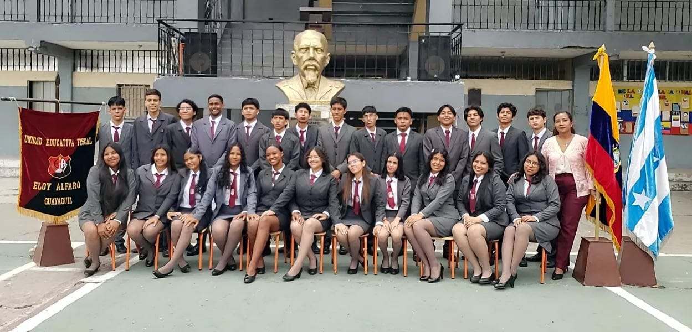
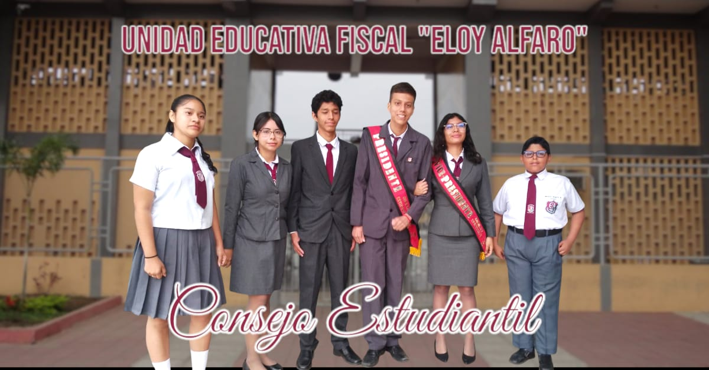

Noticias Alfarinas

Inicio de las Pasantías!
El Primer Paso hacia el Mundo Profesional

El inicio de las pasantías marca una etapa emocionante y significativa para los estudiantes que están a punto de dar sus primeros pasos en el mundo laboral. A partir de este mes, muchos de nuestros alumnos tendrán la oportunidad de aplicar los conocimientos adquiridos en las aulas en entornos profesionales reales, donde enfrentarán desafíos prácticos que los prepararán para su futura vida profesional.
Estas pasantías, que abarcan diversos campos como la tecnología, el comercio, la salud y la educación, permiten a los estudiantes no solo ganar experiencia en sus áreas de interés, sino también desarrollar habilidades clave como el trabajo en equipo, la gestión del tiempo y la resolución de problemas. Al participar en proyectos reales, interactuar con profesionales y enfrentar las dinámicas de un ambiente laboral, los pasantes adquieren una perspectiva más clara sobre sus vocaciones y las demandas del mercado de trabajo.
Los alumnos que iniciarán sus pasantías este año han expresado su entusiasmo por esta nueva etapa. Muchos de ellos ven esta experiencia como una oportunidad invaluable para poner en práctica lo aprendido en clases y explorar más a fondo sus áreas de interés. Asimismo, las empresas e instituciones que los recibirán están igualmente emocionadas por compartir su conocimiento y guiar a los futuros profesionales en su desarrollo.
Las pasantías no solo son una experiencia educativa, sino también una vía para formar relaciones profesionales duraderas y establecer una red de contactos que podría ser útil en sus carreras futuras. Sin duda, esta etapa marca el comienzo de una nueva fase en la vida estudiantil, llena de retos, aprendizajes y oportunidades para crecer tanto en lo personal como en lo profesional.
Cortes de Electricidad
Un Reto para la Educación Escolar
Los recientes cortes de electricidad han generado preocupación en nuestra comunidad educativa, afectando de manera significativa el desarrollo de las actividades académicas. En medio de clases y actividades escolares, la interrupción de la energía ha dificultado el uso de herramientas digitales, la realización de exposiciones y hasta el ambiente de estudio en las aulas, creando una barrera para el aprendizaje continuo.
La falta de electricidad no solo afecta la iluminación de los espacios, sino también el funcionamiento de equipos esenciales como proyectores, computadoras y sistemas de ventilación, fundamentales para mantener un ambiente de aprendizaje cómodo y adecuado. En asignaturas como informática, donde se depende de dispositivos tecnológicos, los cortes de luz han generado retrasos en los contenidos y han limitado la práctica de habilidades clave para los estudiantes.
Además, en esta era digital, muchos de nuestros docentes utilizan presentaciones, videos y plataformas en línea para hacer las clases más dinámicas y accesibles. La falta de electricidad interrumpe estas metodologías, obligando a improvisar y adaptarse rápidamente. Para los estudiantes, esto significa clases menos interactivas y, en ocasiones, menos comprensibles, lo que puede impactar su rendimiento y comprensión de los temas.
Los cortes también afectan actividades extracurriculares y el funcionamiento general de la institución, complicando la administración de horarios y la planificación de eventos. Los estudiantes y el personal docente han manifestado su preocupación, esperando que esta situación mejore para poder continuar sus actividades sin interrupciones.
Este problema destaca la necesidad de buscar alternativas que minimicen el impacto de estos cortes, como el uso de dispositivos de respaldo o el aprovechamiento de recursos impresos. Sin embargo, es innegable que la educación de nuestros jóvenes se ve afectada, y esperamos que pronto se tomen medidas para garantizar un ambiente de aprendizaje estable y continuo para todos.
Posesión del Nuevo Consejo Estudiantil
Jóvenes Líderes al Servicio de la Comunidad Escolar

En una ceremonia llena de entusiasmo y compromiso, se realizó la posesión del nuevo Consejo Estudiantil de nuestro colegio. Los estudiantes elegidos, que representan a distintos niveles académicos, asumieron oficialmente sus cargos, comprometidos a trabajar en beneficio de toda la comunidad estudiantil.
Durante el acto, la directora de la institución felicitó a los nuevos miembros del consejo y les recordó la importancia de su rol como líderes y representantes de sus compañeros.
Entre las propuestas de este año, el Consejo Estudiantil planea organizar nuevas actividades culturales, deportivas y académicas, y establecer un canal de comunicación directa con la administración para abordar temas que sean de interés y preocupación para los estudiantes.
Con la posesión de los nuevos miembros, el Consejo Estudiantil inicia un nuevo ciclo de liderazgo, donde la participación y la voz de los estudiantes serán protagonistas. ¡Les deseamos mucho éxito en su gestión y esperamos ver los frutos de su trabajo en beneficio de nuestra comunidad!

Cultura y Política

Deportes

Noticias Internacionales

Opinión

Noticias
Inicio de las olimpiadas
Se da inicio a uno de los eventos mas importantes del año!